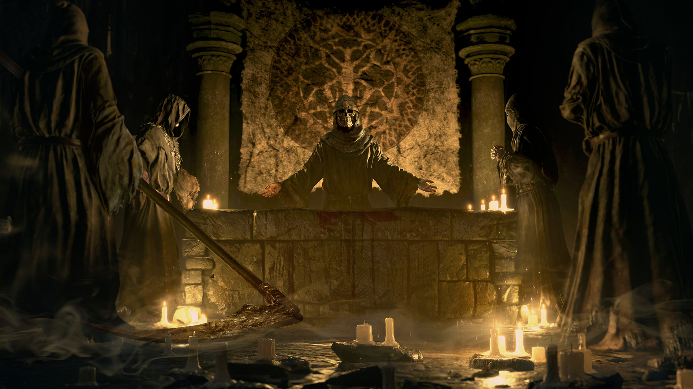

Espere o inesperado
Os cenários estão cheios de surpresas. Descubra locais secretos e reviravoltas no desenrolar da campanha.
Os cenários estão cheios de surpresas. Descubra locais secretos e reviravoltas no desenrolar da campanha.

Como vai sobreviver?
Cuide bem e aprimore seu equipamento,
também vai precisar de artefatos especiais e mágicos.
Cuide bem e aprimore seu equipamento,
também vai precisar de artefatos especiais e mágicos.

Inimigos te esperam
Pessoas estranhas vão aparecer durante a jornada,
cabe ao jogador saber como lidar com essas situações.
Pessoas estranhas vão aparecer durante a jornada,
cabe ao jogador saber como lidar com essas situações.